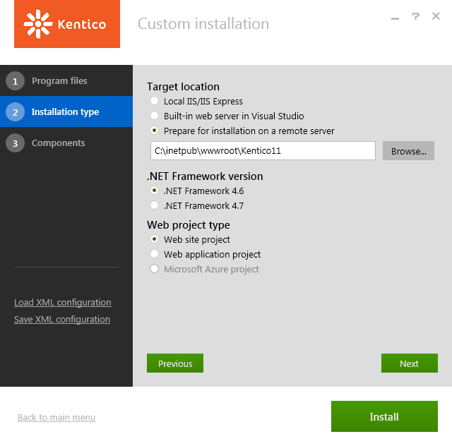

Deploying Kentico to a live server
When you need to deploy a Kentico website to a remote hosting server, install Kentico on the server and then import your website to the installation:
Tip: You can also use the Visual Studio Publish function to deploy your website.
Installing Kentico on a remote server
To install Kentico on a remote server:
Run the Kentico Installer on your local development computer.
Click Next on the welcome screen.
Select your country from the drop-down list and agree to our license terms.
Click Next and select the Custom installation option.
Switch to the Installation type tab.
Select Prepare for installation on a remote server.
Choose a folder for the project files (for example, C:\Temp\Kentico).
Select the .NET Framework version of the remote server.

Remote server deploymentClick Install.
The Installer copies the project files to the specified folder.
Copy the web project files from your local folder (C:\Temp\Kentico) to the root of the website using FTP.
If you want to use a sub-folder, create a new virtual directory.
Kentico is now installed on your remote server. Continue to the next section to deploy a website to the server.
Deploying a website to a live server
After you have installed Kentico on a live server, you can import an already developed website:
Open the Sites application on your local development computer and click Export site (
 ) next to the site that you want to deploy.
) next to the site that you want to deploy.Enter the name of the export package and go through the site export wizard.
The system saves the export package into the <web project>\CMS\CMSSiteUtils\Export folder.
Copy the exported package into the <web project>\CMS\CMSSiteUtils\Import folder on the live server.
Open a web browser and navigate to the /default.aspx page of your live server.
The Database Setup wizard starts up.
Go through the wizard and create a new Kentico database on your live server.
At the end of the process, you may be asked to update your web.config file manually – please follow the instructions on the screen.
At the end of the Database Setup Wizard, choose to import your existing Kentico website (from the previously exported package).
The system imports the existing website.
After you have imported the website, you may need to adjust its configuration:
Open the Sites application. Edit the website and make sure the website domain and domain aliases are configured correctly for the production domains.
Open the Settings application and make sure your site settings contain correct values, especially the SMTP server value in the System -> E-mails section.
Open the Sites application. Click Open live site (
 ) next to your new site and make sure the website is displayed correctly.
) next to your new site and make sure the website is displayed correctly.